清晨河埠
石桥、乌篷船和临水人家，在晨雾里慢慢醒来。
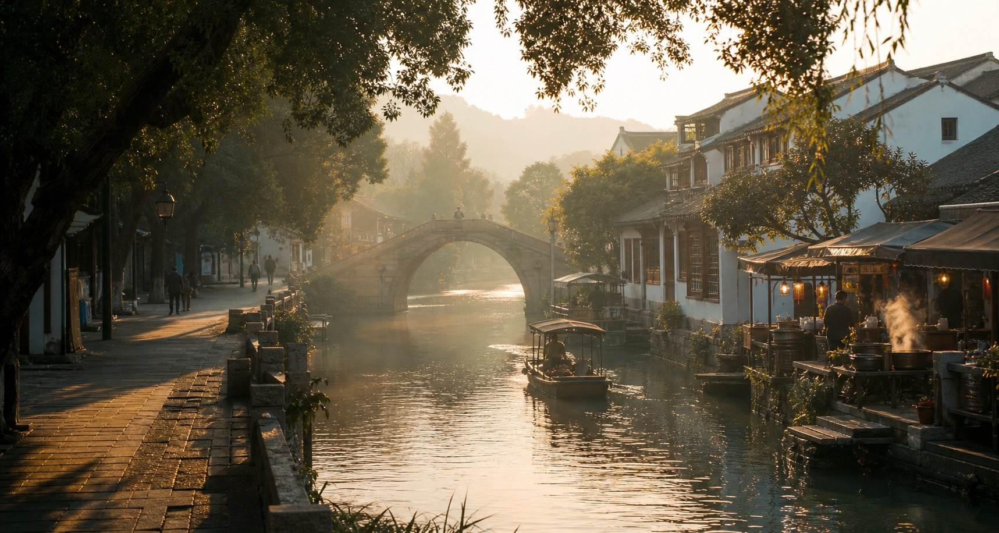
家乡简介
溪南水乡在群山和河网之间慢慢展开。清晨的第一笼包子从老街蒸屉里冒出白汽，船从石桥洞下划过，雨后的青石板路映着红灯笼和屋檐。
这里没有刻意摆拍的热闹，更多是本地人的日常：买菜的老人、临河开门的早餐铺、黄昏田埂上的脚步，以及夜市里一碗热汤带来的踏实感。
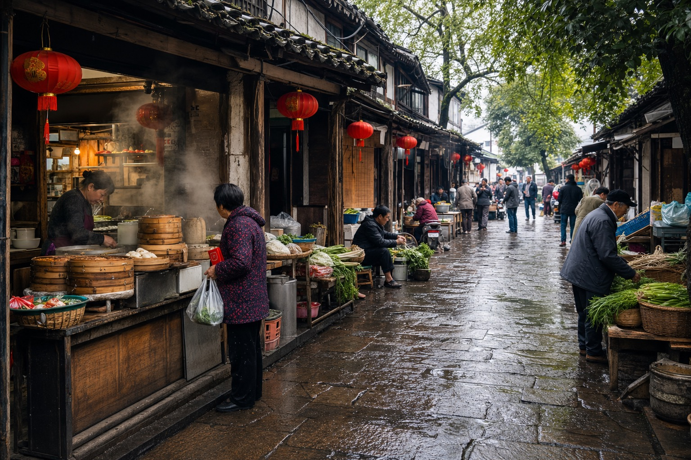
实景风光
石桥、乌篷船和临水人家，在晨雾里慢慢醒来。
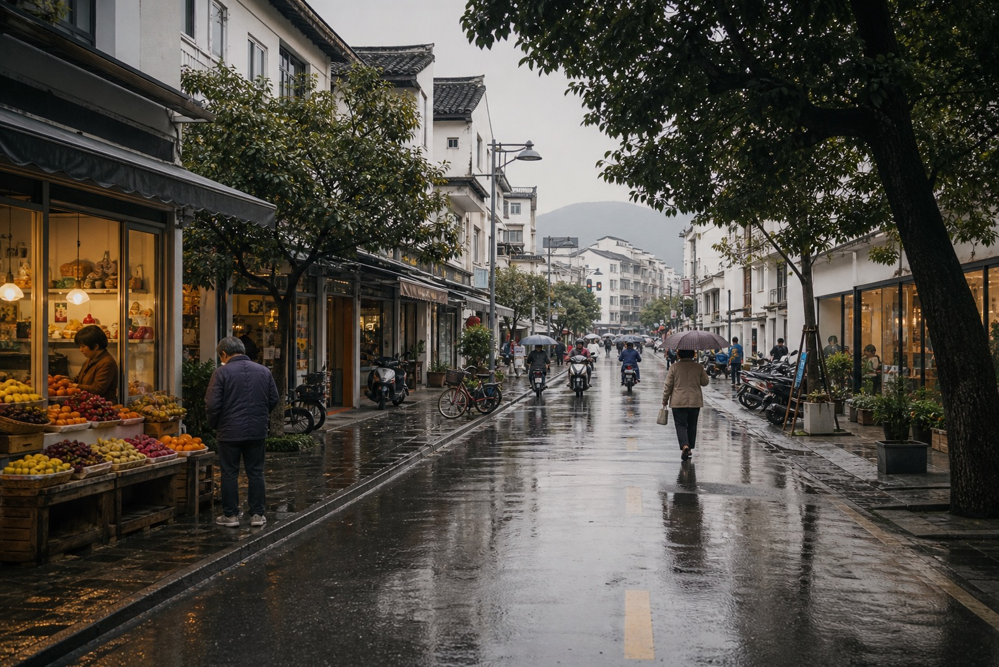
青菜、蒸笼、热汤和方言，把一条街叫醒。
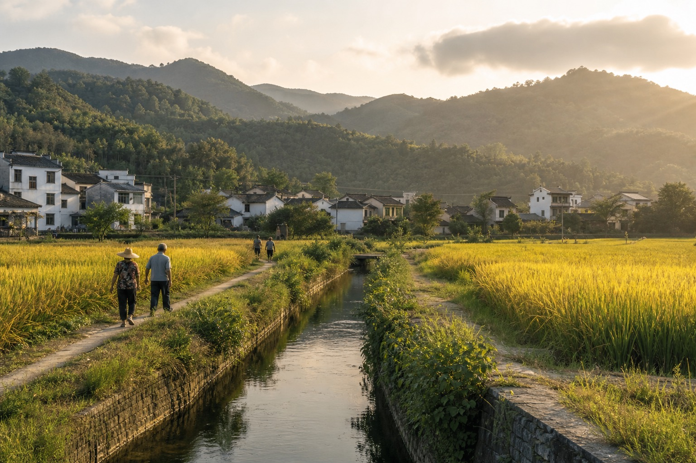
晚风掠过稻浪，田埂尽头就是白墙黛瓦的村子。
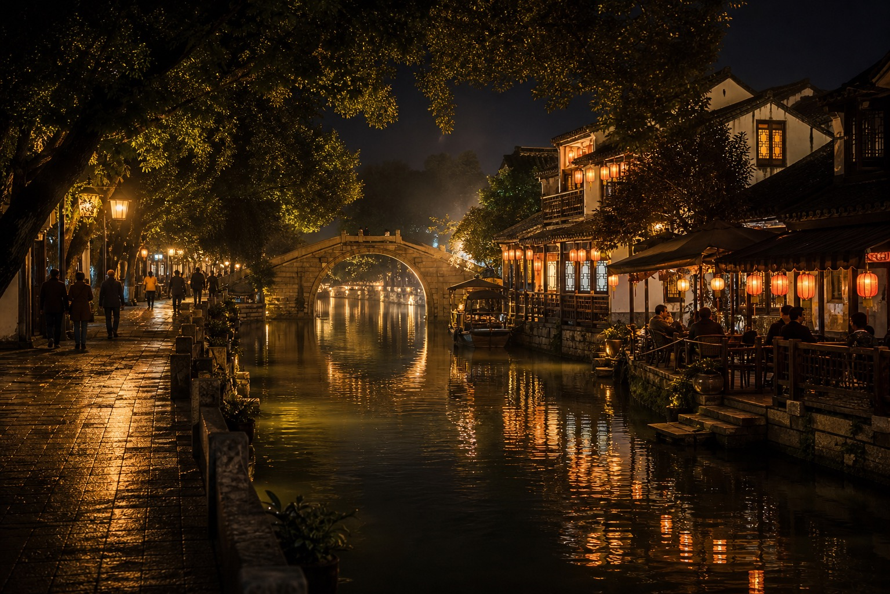
灯泡、蒸汽和小桌板，让夜晚变得热腾腾。
地标建筑
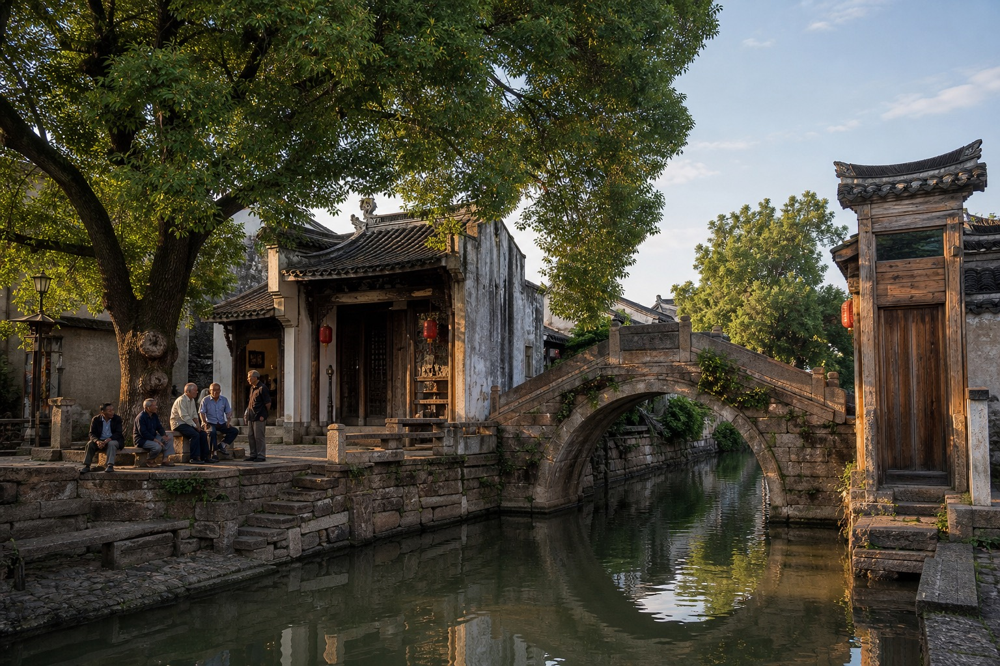
老桥横跨内河，两岸是祖辈留下的台阶和水埠。
推荐理由：晨光和倒影最适合拍照木门、砖雕和天井保留着族谱、节庆和乡音。
推荐理由：能看见水乡建筑细节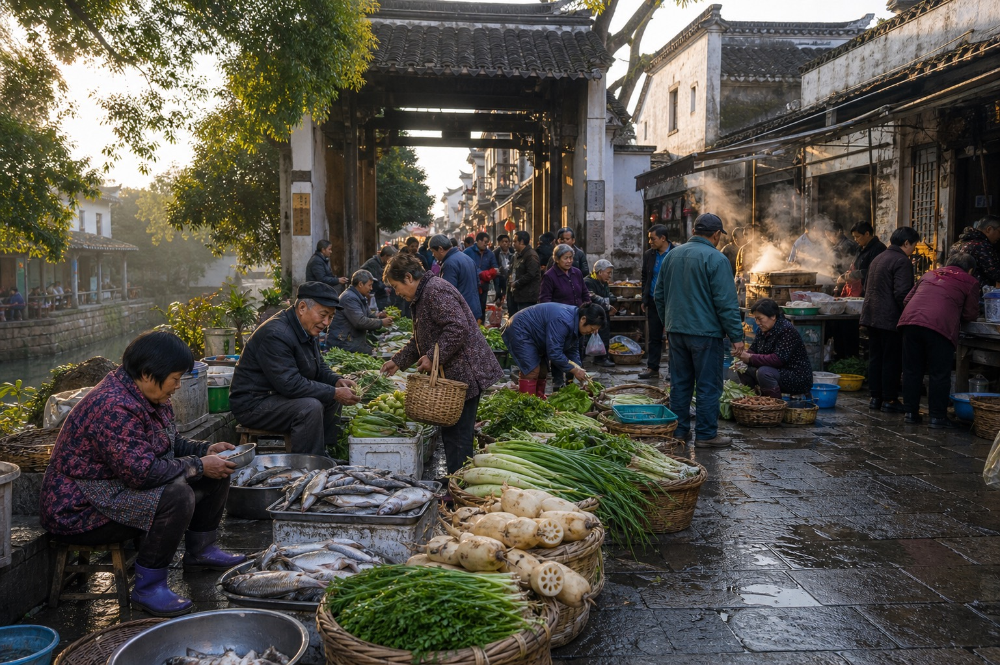
菜篮、竹筐、热豆浆和刚出锅的点心挤满街口。
推荐理由：最接近本地人的日常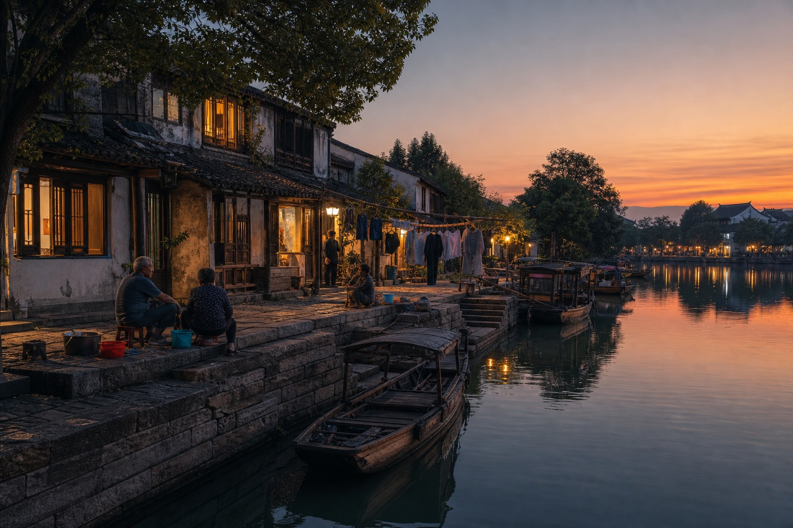
过去靠船运米运菜，如今是散步、看水和吹晚风的地方。
推荐理由：傍晚灯光最有氛围家乡美食
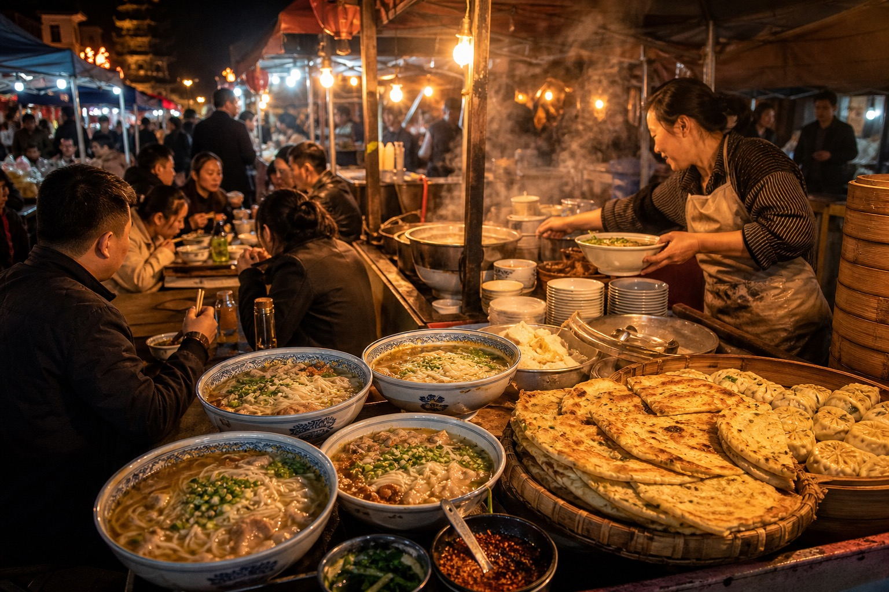
骨汤滚开后浇进大碗，撒上葱花和辣油，是早晚都想吃的一口热乎。
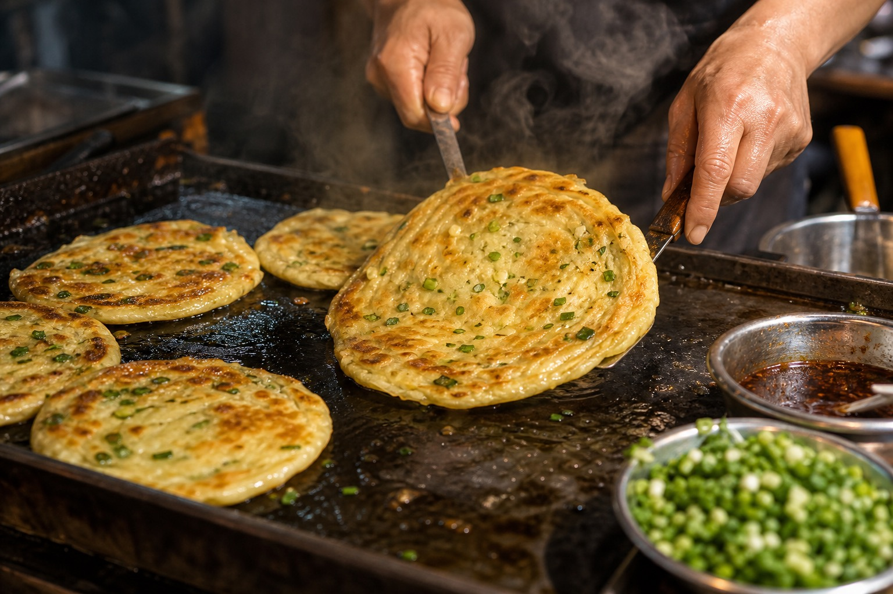
铁锅边烙到焦香，撕开能看见层次，适合边逛边吃。
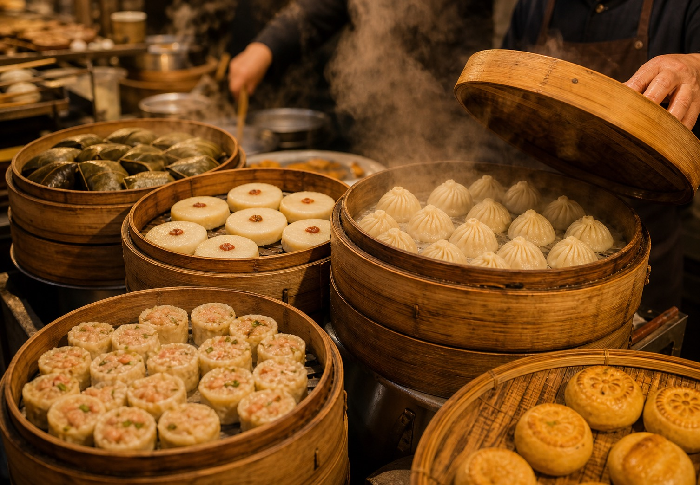
蒸笼一层层摞在摊头，热气混着灯光，是夜里最熟悉的招呼。
人文记忆
石桥两头挂起灯笼，孩子举着花灯跑过河埠，老人坐在树下看热闹。
汤粉、锅饼、凉茶和露天小桌，是夏夜最有记忆点的声音。
新米、莲藕、青菜和土货，从清早开始就把南埠街口挤得满满当当。
熟悉的口音从早餐铺里传出来，一句“趁热吃”就能把人拉回家乡。
推荐路线
这条路线适合第一次来溪南的朋友：不用赶路，上午走老街，中午吃本地味道，下午去田野和河岸，晚上把时间留给夜市灯火。
从早市吃一碗汤粉，再沿石板路走到溪南石拱桥。
找一家靠河的老店，点葱香锅饼、时令小菜和一壶热茶。
去村口稻田和山脚小路，听风吹过水渠和稻浪。
看灯火亮起，再到夜市吃蒸点和热汤，为一天收尾。